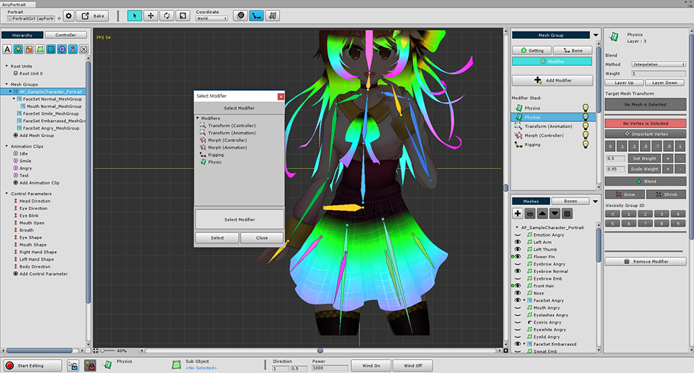
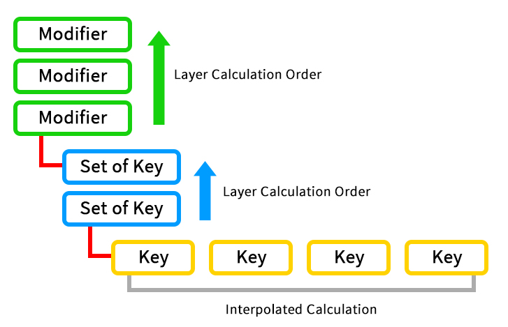

AnyPortrait > Manual > Layer, Weight and Interpolation
Layer, Weight and Interpolation
1.0.0

In order to use various functions provided by AnyPortrait, you need to add modifiers.
It is also possible to register the same modifier several times, and it is also possible to register several control parameters in one mesh.
However, modifiers are processed in a specific order, and you have to choose how to merge the results of each process.
This page describes the processing of multiple modifiers and key sets.
Modifier, Set of Keys, Key

This is an example of the detail setting screen of the modifier.
It displays modifier information. This UI consists of three main areas.
1. Modifier Information
This is the setting for the order and the way it merges with other modifiers.
Color Option On/Off : Determines whether the modifier performs color processing.
Blend Method : This is a way to merge with the information of the previous modifier.
Blend Weight : The weight that is merged with the previous modifier.
Layer Up/Down : Changes the modifier processing order. The lower layer is calculated first.
2. Set of Keys Information
It is the subject that controls the modifier.
Each has a number of keys.
The merge process between key sets is the same as that of the modifier.
Blend Method, Weight : Weight and merge processing between key sets.
Color Option On/Off : Determines whether the key set performs color processing.
Layer Up/Down : Sequence of merging key sets. The lower layer is calculated first.
3. Key
The actual data of the modifier is stored in the key.
Multiple keys can be stored in a set of keys.
Clipboard, Copy, Paste : Copy or Paste key information
Reset Value : Reset the information of the selected key
Key List : The generated key list. Each item is Weight of merging, Key position, Select button, Remove button from left to right.

The calculation order of the modifiers.
1. The information of each key is interpolated. This includes keying control parameters or keyframes in an animation.
2. Merge according to the layer order between the Sets of keys with interpolated key information. This is the control parameter or animated clip.
3. Merge modifiers with sets of keys information in layer order. It is finally reflected in the mesh group.
Processing priority of modifiers
The modifiers are in principle processed in order of layers.
However, depending on the nature of the modifier, it is not always processed in layer order.
The same modifiers are processed in layer order, with the exception of the priority order.
Priority 1 : Morph (Controller), Morph (Animation)
Priority 2 : Rigging
Priority 3 : Transform (Controller), Transform (Animation)
Priority 4 : Physic
Note : Only one Rigging modifier should be applied.
Weight and interpolation method
The Blend Method and Blend Weight are important settings for merging processing.
The interpolation method and weights are handled differently in the following two ways.
1. Interpolation : Overwrite processing method. If the weight is 1, the modifier of the lower layer is ignored and only 100% of the current modifier is applied.
"Previous processing result" x (1 - Weight) + "Current modifier" x (Weight)
2. Additive : Add processing method. The most commonly used method is to add a value of 100% to the result of "processing of previous layer" if the weight is 1.
"Previous processing result" + "Current modifier" x (Weight)
However, when the color information is additive, interpolation is performed by 2X Multiply method instead of addition.